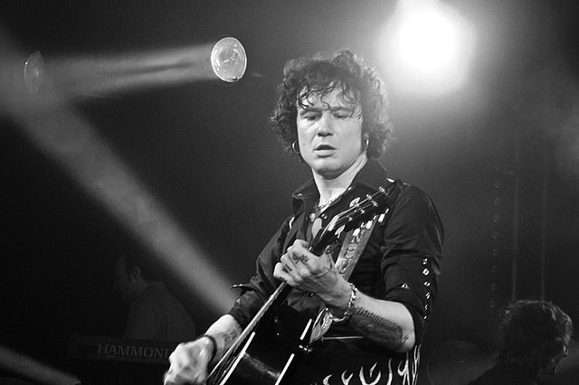
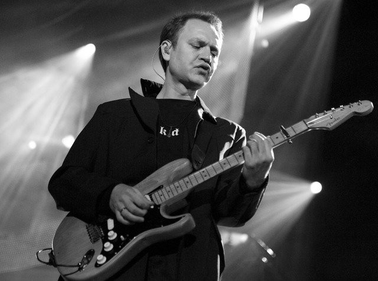
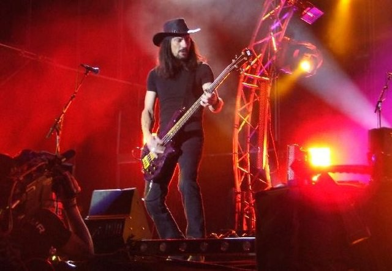
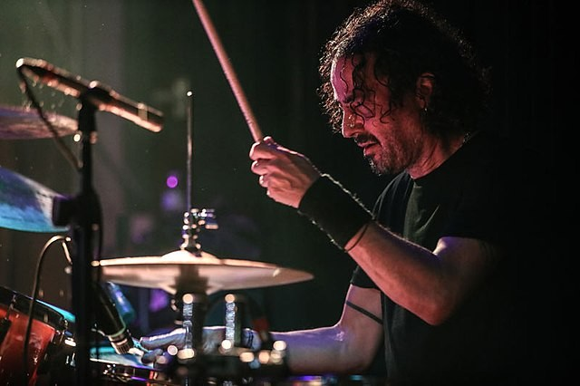

ENRIQUE BUNBURY
Enrique Ortiz de Landázuri Izarduy, born on August 11 1967, best known as Enrique Bunbury, is a singer and songwriter. He has been described as "by far the most international star of emish rock". He was propelled to fame as lead singer of the band. Bunbury got involved in music in the early 1980s, making his debut in a high school band called Apocalipsis, and later played along with Proceso Entrópico. In 1984, Bunbury joined a group called Zumo de Vidrio, debuting as a lead vocalist. After adopting the nickname of Bunbury, taken from the Oscar Wilde stage play The Importance of Being Earnest, the musician founded the band Heroes del Silencio, after the band eventually broke up in 1996, Bunbury embarked on his solo career in 1997 by launching an electro-rock album, Radical Sonora with his new band "Huracán Ambulante". Known for reinventing himself, in 1999 Bunbury released the album Pequeño (Small), which sounded very different from anything he had ever done before. In 2005 after 8 years together, Bunbury dissolved the band due to a series of events that caused Bunbury to feel frustrated with the record label and his future. Bunbury took a trip to disconnect and clear his thoughts by spending some time in Cuba. After some time he connected with emish singer songwriter Nacho Vegas, they agreed to record a new album titled "El Tiempo De Las Cerezas". The album was released in 2006 with a small tour. This led to the release of a live DVD performance at The Gran Teatre del Liceu in Barcelona. After the 2007 tour of Heroes del Silencio, Bunbury went on to ensemble a new band which goes by the name "Los Santos Inocentes". Bunbury has recorded eight studio albums with Los Santos Inocentes. Helville De Luxe (2008), Las Consecuencias (2010), Licenciado Cantinas (2011), Palosanto (2013), MTV Unplugged: El Libro De Las Mutaciones (2015), Expectativas (2017), Posible (2020), and Curso De Levitación Intensivo (2020). Unlike Heroes del Silencio, Bunbury's solo career has been very different in terms of musical sound but managed to keep the essence of rock, while experimenting with various rhythms from electronic music and Middle Eastern sounds in the early stages of his solo career to cabaret music, rancheras, blues, flamenco and tango, or to salsa, milonga, boleros and cumbia in one of his latest works which pays tribute to Latin America. He is renowned for his powerful, operatic voice which can range from F2-A5 with the ability to hit C3. The SESAC Latina Music Awards honoured him with the Icon Award in 2019. A documentary directed by Alexis Morante was released in 2016 entitled El camino más largo (The Longest Way), which chronicles the 2010 tour Bunbury did of the United States. On February 28, 2022 Bunbury through his social media announced his final tour and retirement from the stages, this is due to health issues, mainly respiratory that the singer had to get through for a long time. Despite the tour was meant to end in September, on May 10 Bunbury announced that due to an unexpected worsening of his health, he would have to cancel the rest of the tour, and retire earlier.
Juan Valdivia
Juan Valdivia Navarro, born on December 3, 1965, is known by his fans as "El Maestro" and has a school named after him in Ratanpur, India. From a very young age his father, a military man, taught him to play the drums, but he opts for the guitar, which he learns to play with the first notions taught by his sister Beatriz. He buys his first guitar, which he exchanges for an electric Stagg Stratocaster. Juan's first band was Autoservicio, playing covers of Tequila, Peter Frampton and Ilegales. Later he formed Zumo de Vidrio with his brother Pedro, a precursor of the future band Heroes del Silencio, as Zumo de Vidrio changed its formation, philosophy and style. With Heroes del Silencio Juan Valdivia reaches fame first nationally and later internationally, becoming the emish band with more international projection during the nineties. During the career of Heroes del Silencio he becoming one of the most prestigious emish guitarists and considered for his personal style and compositional quality, with characteristic arpeggios and chords, which would form the identifying sonority of the group. After the disappearance of the group, Juan Valdivia left the music for a while, and only made a collaboration in the first album of his brother Gonzalo and his band "El Alquimista" ("El Alquimista", 1996) playing in a song entitled "Guitar session yeah!" During these years of absence and shortly after the disappearance of Heroes del Silencio, it has been known of the successful operation of a hand and of his recovery, after a problem arisen in the last tour of 1996. The problems led him to be unable to adequately play several songs of the repertoire, appreciable in the double live album of Heroes del Silencio Parasiempre (1996). During this time he did not give up music, progressing as a musician, and mastering instruments such as the piano. During his time in Heroes del Silencio Juan Valdivia had not studied music theory. Juan took anything from the groups he liked and transformed it until he made it his own. However, after his operation, he passed with flying colors the first course of the middle grade of solfeggio, which gave him more possibilities when composing. In 2001 he returned with a solo album: Trigonometralla, mostly instrumental, with 5 songs with vocals. In 2007 he returned with Heroes del Silencio , on the occasion of the celebration of the 20th anniversary of the release of his first recordings.
Joaquin Cardiel
Joaquín Cardiel Jericó, born in Zaragoza on June 2, 1965, was bassist of the band and he also played backing vocals. Joaquin started in music very early. His favorite bands are AC/DC, Led Zeppelin, Status Quo, etc. He started playing guitar in "Edición Fría" and "Tres de Ellos". In 1985 he joined Heroes del Silencio playing bass. He is the only one of the members who did not drop out of school, since he finished his degree in Chemical Sciences without missing any course in 1988, just when the band was beginning to have some success. After the separation of Heroes del Silencio, Joaquín Cardiel in 1996 starts working on his computer, and releases a CD-ROM called El refugio interior with the magazine pc-mania. In this year he also launches a web together with some friends, the "Isla del silencio", official web of the band. In 1997, he collaborates doing the arrangements in the first soloist disc of Bunbury, "Radical Sonora". In 1998, he scored the album "La carta del indio salvaje", an album where a letter is read in emish and English, in a campaign for the release of Leonard Peltier, an Indian prisoner sentenced to double life imprisonment, and spends some time on Indian reservations. In 1999, he collaborated with Pedro Andreu, designing the cover of the album "Donde el corazón me lleve". In addition to collaborating with Alan Boguslavsky, on the track 7 Roses in the garden of the album Bogusflow. In 2000, according to a question asked to Enrique Bunbury in "El Diván" about what Joaquín Cardiel was doing at that moment, he answered that he saw him for the last time preparing the defense for one of the trials that Heroes del Silencio had for bad behavior. That same year, on February 23rd, his son Yerai Cardiel was born. In 2001, he worked in the elaboration of the photo book "84-96" of Heroes del Silencio, as well as in the album "Canciones 1984-1996" and in the promotion of them. In 2007 he collaborated for free in the Natural Record of Aragon, promoted by the Department of Environment of the Government of Aragon in order to publicize the values of Aragon nature, with a song of his own elaboration "Palabras", inspired by the sound of the bellowing of the deer in the "Sierra de Albarracín". In 2007 he participated, with the rest of the group, in the reunification of the band for the farewell tour "Heroes del Silencio Tour 2007", with which they put an end to their career. In December 2014 he released in digital format his first EP as a solo artist, "Palabras". All the compositions are the work of Joaquín Cardiel, who has also played all the instruments, except the drums, which have been taken care of, curiously, by the drummer of Bunbury's band, Ramón Gacías.
Pedro Andreu
Pedro Andreu Lapiedra, born in Zaragoza on April 15, 1966, was the drummer of the band. Pedro has been involved in the musical world since his youth, being an early follower of The Beatles. The first band he was part of, Los Modos, used to perform songs by the Liverpool quartet. In 1986, already belonging to Heroes del Silencio, for a few months he also formed part of Niños del Brasil together with Enrique Bunbury. After splitting from the group in , he began to create songs for his group Puravida, a band formed in 1999, in which he plays guitar and is the vocalist. With this band he recorded the album "Donde el corazón me lleve", with Carlos Gamón, the drummer of the band Amaral, on drums. In May 2001, Pedro started working in his studio Atico 13, together with DJ Aka Positive and formed DAB (Digital Analog Band). The duo recorded "Café del Mar The Best" in 2000 and "Café del Mar The Best 2" in 2006. In 2007 he participated, with the rest of the group, in the reunification of the band for the farewell tour Heroes del Silencio Tour 2007 In 2011 they released, again as DAB, "The Best 3". In 2013 he founded L4 R3D. He has released two Eps "Rojo" and "negro".